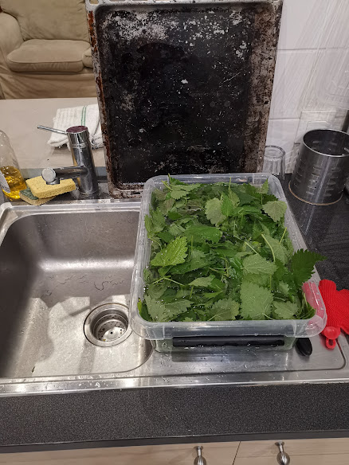

Ingrédients
- Des orties (Hein, jure!)
- De l’eau
- De la crème fraîche
Facultatif mais c’est meilleur avec :
- Tout ce qui ressemble à un légume et qui traîne dans une armoire ou dans le frigo
- Tout ce qui ressemble à des épices qui traîne dans une armoire ou dans la salle de bain
- Du sucre en poudre
- Du bouillon en cube (le meilleur, c’est le bouillon de bœuf)
Prérequis
Si comme moi vous avez la chance d’avoir un jardin,
Si comme moi vous avez la flemme de faire les courses,
Si comme moi vous avez la flemme de faire du jardinage, et que du coup il y a plein d’orties qui poussent dans votre jardin…
Voici la solution à tous vos problèmes :
-
Allez dans votre jardin, arrachez quelques orties à la racine et mettez tout dans un carton. Mon carton fait environ le volume de 3-4 boîtes à chaussures. Avec ça, je fais 2 litres de soupe.
-
Il faut garder que les feuilles et vérifier qu’il n’y ait pas de caca d’oiseau dessus. La technique, c’est de faire glisser la tige dans sa main dans le sens contraire de la pousse. Ça arrache toutes les feuilles de l’ortie d’un coup. Si vous avez des gants, vous pouvez les mettre. Si comme moi vous n’en avez pas, il y a une technique pour choper les orties dans la paume de la main sans se piquer.
-
Là, ça devient plus galère de ne pas se piquer. Il faut laver les feuilles d’ortie. Je n’ai pas encore trouvé d’autre technique que de tout mettre dans une bassine et de remuer à la main.
-
Ensuite, il faut les égoutter. J’ai 2 techniques :
- Soit je prends les feuilles à la main et je les secoue au-dessus de l’évier.
- Soit je mets tout dans une passoire avec un couvercle et je secoue.
Ça y est, les orties sont prêtes.
Préparation
-
Faites bouillir de l’eau dans une marmite. Ajoutez le bouillon (optionnel).
-
Quand l’eau boue, BAISSEZ LE FEU (sinon ça crame 😭) ! Mettez environ les 3/4 des orties. L’eau doit tout recouvrir.
Si vous avez des légumes (patates, carottes, oignons, poivrons, haricots en conserve…), c’est le moment de les ajouter aussi. -
Quand vous avez l’impression que les patates sont cuites, ajoutez la fin des orties.
-
Attendez 5 minutes, puis mixez tout.
-
Ajoutez plein de crème fraîche.
-
Goûtez la soupe :
- Si c’est amer : ajoutez le sucre en poudre.
- Si c’est fade : ajoutez du sel, de l’ail ou d’autres épices que vous avez trouvées.
- Si ce n’est pas bon : rajoutez des trucs tant que c’est bon.
-
Voilà, c’est prêt. Dégustez avec du pain et des amis.